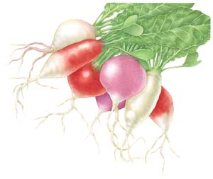
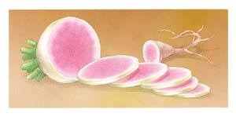

In spring, sow salad radishes at 10-day intervals starting two weeks before your average last spring frost, continuing to three weeks after your last frost date. Sow rat-tail radishes around your last spring frost date.
In fall, sow all types of radishes at two-week intervals starting eight weeks before your first fall frost, continuing up until three weeks before your first frost date.
When preparing the planting bed, loosen the soil 6 to 10 inches deep, and mix in good compost or well-rotted manure. Sow seeds a half inch deep and 1 inch apart, in rows spaced 12 inches apart. After the seedlings appear, thin salad radishes to 3 inches apart; thin oriental radishes to 8 to 10 inches apart. Seeds typically sprout in three to seven days when sown in 60-degree soil.
Flea beetles make numerous small holes in radish leaves. Cabbage root maggots and cutworms sometimes rasp holes or channels into radish skins. All of these pests are easily prevented by covering the plants with lightweight floating rowcovers.
When sown early and exposed to cold weather, some radishes will bolt (rush to produce flowers) before they develop plump roots. Bolting is rare in radishes grown in late summer and fall.
When pulling radishes in warm weather, cool them right away by dropping them into a pail of cold water. Use a sharp knife or kitchen shears to remove the leaves, then store in the refrigerator for up to three weeks. Large oriental varieties can be left in the ground well into fall and dug just before the soil freezes.
Harvest salad radishes once they are bigger than grapes. Radishes left in the ground too long develop a pithy texture and often crack following heavy rains.
Hot weather and drought encourage the development of spicy flavor compounds, which are similar to those found in horseradish.
To save seeds from open-pollinated varieties, allow three or more plants to bloom together, and wait until the seed pods dry and turn brown before harvesting the seeds. Crush the pods with your hands, winnow or sift them to separate seeds from chaff, and store the seeds in a cool, dry place for up to five years.
Slice or grate radishes into salads and slaws, or layer them onto sandwiches. You also can try eating radishes the European way - with bread and butter. Radishes braised in butter or sesame oil until they just begin to brown have a mellow flavor and succulent texture. Substitute sliced or diced radishes for water chestnuts in stir-fries. A handful of salad radishes provides about 20 percent of your daily quota of vitamin C, along with about 2 grams of fiber, lutein and a range of minerals.
| Type | Description | Cultural Tips | Varieties |
| Small Round (Radiculata group) | Commonly used in salads, slaws and sandwiches, these radishes also can be cooked. Young leaves are edible, but not very tasty. | Use frames or tunnels to warm soil to favorable germination range (above 55 degrees) in spring. Keep soil constantly moist. Check daily after three weeks, and harvest promptly. Remove tops before storing in refrigerator. | ‘Champion’ ‘Easter Egg’ ‘Hailstone’ ‘Pink Beauty’ ‘Plum Purple’ ‘Scarlet Globe’ |
| European (Radiculata group) | Round or cylindrical radishes often are served with bread and butter in France, or mustard and pretzels in Germany. | Same as small round type (see above). | ‘Bartender Red Mammoth’ ‘D’Avignon’ ‘French Breakfast’ ‘White Icicle’ |
| Large Oriental (Longipinnatus group) | Most varieties grow to carrot size or larger; a few varieties are round. Very easy to grow. Varieties with cylindrical roots often push up out of the ground as they mature. | Loosen soil at least 14 inches deep. Thin to 10 inches apart. Dig gently to avoid broken roots. Remove tops after harvesting. Store in refrigerator, or pack in damp sand and store in root cellar or unheated garage. | ‘Minowase’ ‘Minowase Summer Cross’ ‘Misato’ ‘Miyashige’ ‘Red Meat’ |
| Winter Storage (Radiculata group) | Crisp roots have dense flesh, dark skin, and a complex, spicy flavor. | Quality is best when roots mature in cool fall soil. Remove tops after harvesting. Store in refrigerator, or pack in damp sand and store in root cellar or unheated garage. | ‘Neckarruhn Red’ ‘Nero Tondo’ ‘Rex’ ‘Round Black Spanish’ |
| Edible Pod (Caudatus group) | Grown for seed pods only, though the ‘Münchener Bier’ variety also produces good roots. | Harvest immature seed pods when crisp and tender, like spicy snow peas. | ‘Münchener Bier’ ‘Rat’s Tail’ |
|
 KEITH WARD Radishes come in a wide variety of colors and shapes. |
 KEITH WARD Slice or grate radishes into salads and slaws, or layer them onto sandwiches. |
|